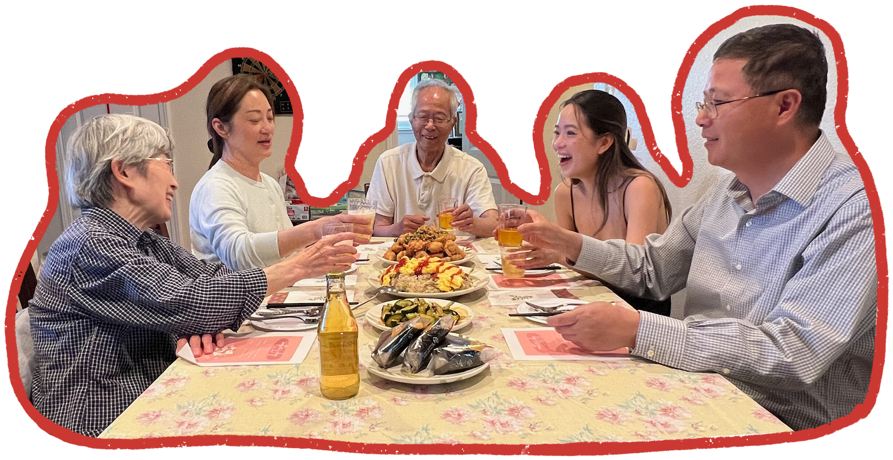

The Xuan family historically resided in Xuan Village. In the 1970s, when one of the family tombs was opened, researchers discovered that Chang Xuan, whose portrait was found inside, had indeed been buried there. Born around 1450, Chang Xuan served as vice mayor in two different Chinese states. He resigned from his first position as vice mayor when his parents fell ill, returning to Jiading to care for them. Later, he resigned from his second vice mayor position by taking the blame for two colleagues' mistakes, allowing them to maintain their government positions. After this, he returned to Jiading once again, where he became a teacher. Chang Xuan lived to the remarkable age of approximately 94 years.
Today, while some members of the Xuan family remain in Shanghai, my branch of the family relocated to California. When my grandfather, Shengtao Xuan, immigrated, he brought with him the knowledge of traditional Shanghai cuisine. Through his cooking of these delicious Shanghai dishes, he showed me his love.
